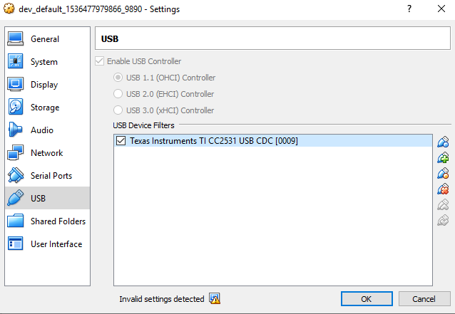

IKEA Trådfri bulbs without Trådfri gateway: getting started (complete instructions)
TL;DR; control all Zigbee devices (Philips Hue, Xiaomi smarthome, IKEA Trådfri etc etc.) more securely, more cheaply, more creatively, more robustly, more privately and be in total control!
You still need some hardware to interface with Zigbee, but using something like Texas Instruments’ CC2531 brings a lot of benefits. More on this very closely below!
Why & overview
Why would I want a custom Zigbee gateway? Well, it brings us these benefits:
- CC2531 is much cheaper (around 4 €) than the Trådfri gateway
- Instead of having to have multiple gateways for all vendors (Philips Hue gateway, IKEA Trådfri gateway, Xiaomi gateway), you have only one gateway for all vendors!
- Zigbee seems to have won the IoT networking market share, so expect lots of more devices to come!
- Gives us lower level access to the Zigbee network (more options)
- Use of open source software like zigbee2mqtt to totally take control of the Zigbee devices
- Disconnect from vendor’s cloud to:
- Increase security (your devices aren’t exposed to internet unless you want to)
- Reduce limitations of IKEA’s Trådfri gateway (e.g. you don’t get access to movement sensor’s events)
- Be able to fully use your devices even if the vendor stops supporting them
- Your home automation stuff won’t break if the vendor makes a backwards compatibility-breaking change. Only you decide when to update your devices!
This post will cover:
- Buying the Zigbee USB dongle and its accessories
- Flashing the dongle with correct firmware
- You can do this from Windows or Linux
- Temporarily installing testing software to check that the dongle works at the basic level
- You can do this in Windows PC (via VirtualBox VM), Linux PC or Raspberry Pi (still Linux but different CPU architecture).
- What to do next?
Buying the hardware
Here’s everything I bought - they worked perfectly for me:
- Wireless Zigbee CC2531 USB module, 4.30 €
- Flasher device so you can flash custom firmware on the dongle, 4.50 €
- Cable and adapter for the flasher device, 1.50 € (the flasher’s regular cable is way larger than what is needed for the dongle)
Total cost was about 10 €. I actually bought 4 dongles, but you only need one flasher device & cable to set up as many dongles as you want.
If those links are unavailable, both zigbee2mqtt and gadget-freakz have great “where to buy” -links.
Flashing the dongle
This was described perfectly at gadget freakz, along with:
- All the required files (drivers, flasher, firmware etc.)
- Screenshots of installation & flashing procedure and troubleshooting instructions
- Picture of how to connect the flasher and the cables
Thanks for the help! :)
Warning: make sure to connect the flasher’s cable to the USB dongle the correct orientation so you don’t fry it! Observe the picture carefully from the link.
Pro-tip: note that you don’t have to connect the dongle to the computer during flashing. The gadget-freakz picture had it connected to the computer - but that is not required.
Preparations for installing the testing software
You will most likely end up installing this on Raspberry Pi. But before that, I wanted to test everything before installing on the Pi to make sure that everything works and so that I know the correct software to install.
So for testing, these steps are for Linux PC. I am actually running Windows so I installed this on a Linux VM on VirtualBox, so I had one additional step to pass through the Zigbee USB stick to the VM:

After starting the VM, you should see the USB stick as connected:
$ lsusb
Bus 001 Device 002: ID 0451:16a8 Texas Instruments, Inc.
It should show up as a serial port, and $ cat should not give errors:
$ ls -l /dev/ttyACM0
crw-rw---- 1 root dialout 166, 0 Dec 17 09:08 /dev/ttyACM0
$ cat /dev/ttyACM0
The $ cat operation should block - you can exit with Ctrl + c.
Now, I wanted to test the installation inside Docker container, as not to litter my VM with stuff I would want to remove later when I transfer this to a Raspberry Pi.
Note:
You don’t need Docker, if you don’t want to use it just skip the Docker specific parts!
Start a container (note that we’re passing the serial port device):
$ docker run --name zigbee -it --device=/dev/ttyACM0 ubuntu bash
You should now test that you can still $ cat the serial port inside the container.
NOTE: You’ll later want to have more terminal sessions inside this container - here’s the command:
$ docker exec -it zigbee bash
Installing the testing software
My goal was just to test that the USB stick works. For that I needed to install zigbee2mqtt and its dependencies. Here’s a short architecture diagram of how this all fits in:
+------------------+
| |
| Zigbee RF device |
| (CC2531) |
| |
+-------^----------+
|
|
|
+---------+------------+
| |
| Serial port over USB |
| |
+---------^------------+
|
|
+---------------------+--------------------------+
| |
| Bridge for talking to Trådfri bulbs via Zigbee |
| (zigbee2mqtt) |
| |
+---------------------^--------------------------+
|
|
+------+-------+ +------------------------------+
| | | |
| MQTT server | | A client that wants to turn |
| (mosquitto) <-------+ Trådfri bulb on/off. |
| | | (we're using mqttcli) |
+--------------+ | |
+------------------------------+
Now, inside the container I started by updating apt package list:
$ apt update
I then installed Nodejs (required for zigbee2mqtt):
$ apt install -y gnupg curl git make g++ gcc && curl -sL https://deb.nodesource.com/setup_10.x | bash -
$ apt install -y nodejs
And then zigbee2mqtt:
$ git clone https://github.com/Koenkk/zigbee2mqtt.git /opt/zigbee2mqtt
$ cd /opt/zigbee2mqtt
$ npm install
And then I installed an MQTT server (required for zigbee2mqtt) and a MQTT CLI for sending test messages:
$ apt install -y mosquitto
$ curl --fail --location -o /usr/local/bin/mqttcli https://github.com/shirou/mqttcli/releases/download/0.0.3/mqttcli_linux_amd64
$ chmod +x /usr/local/bin/mqttcli
NOTE: if you’re running on Raspberry Pi, replace mqttcli_linux_amd64 with mqttcli_linux_arm.
Then I started the MQTT server (you should have this running before starting zigbee2mqtt)
$ mosquitto
Since mosquitto now uses your terminal for output, open an another session with
$ docker exec (I described this above).
Now start zigbee2mqtt:
$ cd /opt/zigbee2mqtt
$ npm start
This once again uses your terminal, so open an another session again.
Pairing your first Trådfri bulb with the USB Zigbee dongle
Refer to instructions here, specifically the YouTube video. I did this 6x on/off really close to my Zigbee dongle.
You should see this in the zigbee2mqtt output:
zigbee2mqtt:warn 12/17/2018, 9:23:19 AM Message without device!
zigbee2mqtt:info 12/17/2018, 9:23:19 AM Device incoming...
zigbee2mqtt:info 12/17/2018, 9:23:19 AM MQTT publish: topic 'zigbee2mqtt/bridge/log', payload '{"type":"pairing","message":"device incoming"}'
zigbee2mqtt:info 12/17/2018, 9:23:19 AM New device with address 0xd0cf5efffe080b89 connected!
zigbee2mqtt:info 12/17/2018, 9:23:19 AM MQTT publish: topic 'zigbee2mqtt/bridge/log', payload '{"type":"device_connected","message":"0xd0cf5efffe080b89"}'
Success! This Zigbee device’s address is 0xd0cf5efffe080b89, which we’ll need soon.
Sending on/off messages to the Trådfri device
Take a look at zigbee2mqtt’s
message structure docs.
If we want to toggle the bulb, the:
- MQTT topic would be
zigbee2mqtt/[DEVICE_ID]/setand - the MQTT message content would be
{"state": "TOGGLE"}
Now, remembering the device address and using mqttcli:
$ mqttcli pub -t zigbee2mqtt/0xd0cf5efffe080b89/set -m '{"state": "TOGGLE"}'
Now the bulb power should have toggled, congratulations!
Recap
You should now have the basic understanding of how to communicate with Zigbee devices (not just with IKEA Trådfri ones). There are very exciting devices out there that you can now control and have all the benefits I previously mentioned.
This was a bit of a low-level tutorial, since my goals are a bit different (I’m building my own home automation software). But you will probably use higher level software like Home Assistant so things should be pretty easy for you now that we just tested the low level stuff (so you can be confident that it should work from higher level software) and learned a bit of architecture of how zigbee2mqtt works.
There are lots of great instructions on setting up all kinds of cool stuff with Home Assistant. And zigbee2mqtt has awesome instructions also!
Thoughts on future of home automation
I feel like we’re at a golden age of home automation hardware: since home automation is a relatively new thing, the technology is still (relatively speaking) simple in that there are hacker communities taking control of different gadgets and using it without the apps and clouds of the vendors - in a way the vendor does not intend.
I think in the future when this “internet of shit” (= putting your fridge, washing machine and toaster on the internet) hardware gets more complicated, the vendors will try harder to lock their hardware down to prevent people from taking full control of them.
Even if they don’t intend on locking down the gadgets, things will inevitably get harder when the hardware evolves. Things are relatively easy right now mainly because the hardware is not powerful enough for people to start putting miserable and over-complicated software on them. Need proof? Think of how well infrared remote controls have worked for decades, and now smart TV vendors are slowly switching to Bluetooth based remotes. I have one, it doesn’t work properly (it sometimes stops sending button presses) and the TV is harder to automate because instead of a simple IR sender now need more complicated protocols.
Let’s enjoy the state of how things are right now, because the benefits only with regard to privacy are huge - the vendor cannot spy on you if the thing is not connected to the vendor’s cloud. This “golden age” may not last for very long, since sadly all great tech will eventually be tried to exploit people (just look at how unetchical Facebook or Google has been recently).
We should fight for the democratization of technology, or else companies like Google will end up controlling everything.
Extra reading

Thanks for reading! 😍
If you like my writing, consider following me on Twitter.
Stay updated on my blog posts & projects - sign up for
my newsletter. 🚀
No spam, unsubscribe any time.
RSS also available.